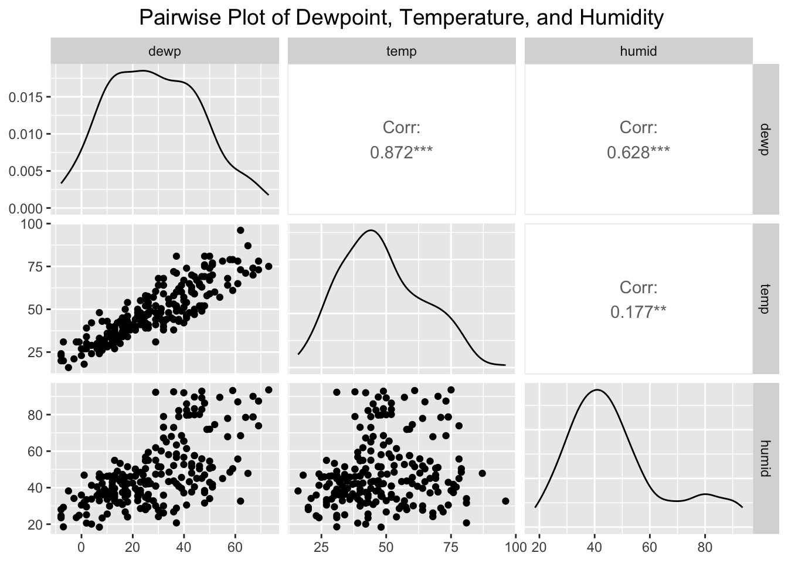

# Load necessary libraries
library(tidyverse)
library(nycflights13)
library(GGally)Registered S3 method overwritten by 'GGally':
method from
+.gg ggplot2# Data Preparation
# Filter flights data for JFK and ExpressJet airlines, and summarize departure delays
flights %>%
filter(origin == "JFK", carrier == "EV") %>%
mutate(DateTime = paste(month, day, hour, sep = ".")) %>%
select(DateTime, `Departure Delay` = dep_delay, `Departure Time` = sched_dep_time) %>%
droplevels() -> df.jfk
# Prepare weather data for JFK
weather %>%
filter(origin == "JFK") %>%
mutate(DateTime = paste(month, day, hour, sep = ".")) %>%
select(-origin, -year, -month, -day, -hour, -time_hour) -> df.weather
# Merge the datasets on DateTime
merge(df.jfk, df.weather, by = "DateTime") %>%
select(-DateTime) -> df
# Remove rows with missing values
df_clean <- df %>% drop_na()
# Exploratory Data Analysis
# Pairwise plots for temperature, dewpoint, and humidity
df_subset <- df_clean %>% select(dewp, temp, humid)
ggpairs(df_subset) +
ggtitle("Pairwise Plot of Dewpoint, Temperature, and Humidity") +
theme(plot.title = element_text(hjust = 0.5, size = 14))
# Linear Regression: Initial Model
model1 <- lm(`Departure Delay` ~ temp + dewp + humid + wind_dir +
wind_speed + wind_gust + precip + pressure + visib + `Departure Time`,
data = df_clean)
print(summary(model1))
Call:
lm(formula = `Departure Delay` ~ temp + dewp + humid + wind_dir +
wind_speed + wind_gust + precip + pressure + visib + `Departure Time`,
data = df_clean)
Residuals:
Min 1Q Median 3Q Max
-118.320 -23.376 -11.696 5.493 272.840
Coefficients:
Estimate Std. Error t value Pr(>|t|)
(Intercept) 1.455e+03 5.391e+02 2.699 0.007523 **
temp -3.544e+00 2.020e+00 -1.754 0.080837 .
dewp 3.550e+00 2.230e+00 1.592 0.112816
humid -1.983e+00 1.187e+00 -1.671 0.096223 .
wind_dir -1.562e-01 4.230e-02 -3.694 0.000281 ***
wind_speed -1.700e+00 1.516e+00 -1.122 0.263290
wind_gust 3.087e-01 1.292e+00 0.239 0.811388
precip -3.287e+02 7.856e+02 -0.418 0.676068
pressure -1.117e+00 4.966e-01 -2.250 0.025490 *
visib -1.106e+01 3.245e+00 -3.407 0.000785 ***
`Departure Time` 2.754e-02 7.884e-03 3.494 0.000580 ***
---
Signif. codes: 0 '***' 0.001 '**' 0.01 '*' 0.05 '.' 0.1 ' ' 1
Residual standard error: 47.64 on 212 degrees of freedom
Multiple R-squared: 0.1781, Adjusted R-squared: 0.1393
F-statistic: 4.593 on 10 and 212 DF, p-value: 6.508e-06# Diagnostics for Initial Model
dev.new(width = 10, height = 8) # Open a new plotting window with larger dimensions
par(mfrow = c(2, 2), mar = c(4, 4, 2, 1)) # Set margins
plot(model1) # Base R diagnostic plots
par(mfrow = c(1, 1)) # Reset plotting layout
# Feature Selection with Stepwise AIC
step_model1 <- step(model1, direction = "both")Start: AIC=1733.91
`Departure Delay` ~ temp + dewp + humid + wind_dir + wind_speed +
wind_gust + precip + pressure + visib + `Departure Time`
Df Sum of Sq RSS AIC
- wind_gust 1 129.6 481255 1732.0
- precip 1 397.3 481523 1732.1
- wind_speed 1 2855.1 483980 1733.2
<none> 481125 1733.9
- dewp 1 5753.8 486879 1734.6
- humid 1 6335.9 487461 1734.8
- temp 1 6983.8 488109 1735.1
- pressure 1 11486.9 492612 1737.2
- visib 1 26347.4 507473 1743.8
- `Departure Time` 1 27700.9 508826 1744.4
- wind_dir 1 30964.9 512090 1745.8
Step: AIC=1731.97
`Departure Delay` ~ temp + dewp + humid + wind_dir + wind_speed +
precip + pressure + visib + `Departure Time`
Df Sum of Sq RSS AIC
- precip 1 417.6 481672 1730.2
<none> 481255 1732.0
- dewp 1 5838.0 487093 1732.7
- humid 1 6489.7 487745 1733.0
- temp 1 7104.5 488359 1733.2
- wind_speed 1 8008.3 489263 1733.7
+ wind_gust 1 129.6 481125 1733.9
- pressure 1 12230.5 493485 1735.6
- visib 1 27184.4 508439 1742.2
- `Departure Time` 1 27705.1 508960 1742.5
- wind_dir 1 30843.8 512099 1743.8
Step: AIC=1730.16
`Departure Delay` ~ temp + dewp + humid + wind_dir + wind_speed +
pressure + visib + `Departure Time`
Df Sum of Sq RSS AIC
<none> 481672 1730.2
- dewp 1 6374.4 488047 1731.1
- humid 1 7171.7 488844 1731.5
- temp 1 7655.1 489328 1731.7
- wind_speed 1 7921.9 489594 1731.8
+ precip 1 417.6 481255 1732.0
+ wind_gust 1 149.8 481523 1732.1
- pressure 1 11985.2 493658 1733.6
- visib 1 27416.2 509089 1740.5
- `Departure Time` 1 27973.0 509646 1740.8
- wind_dir 1 30979.9 512652 1742.1print(summary(step_model1))
Call:
lm(formula = `Departure Delay` ~ temp + dewp + humid + wind_dir +
wind_speed + pressure + visib + `Departure Time`, data = df_clean)
Residuals:
Min 1Q Median 3Q Max
-113.518 -23.215 -11.534 5.312 267.409
Coefficients:
Estimate Std. Error t value Pr(>|t|)
(Intercept) 1.467e+03 5.260e+02 2.788 0.005778 **
temp -3.677e+00 1.994e+00 -1.844 0.066537 .
dewp 3.700e+00 2.199e+00 1.683 0.093859 .
humid -2.080e+00 1.165e+00 -1.785 0.075675 .
wind_dir -1.561e-01 4.207e-02 -3.710 0.000264 ***
wind_speed -1.376e+00 7.334e-01 -1.876 0.062009 .
pressure -1.123e+00 4.866e-01 -2.308 0.021979 *
visib -1.077e+01 3.087e+00 -3.490 0.000586 ***
`Departure Time` 2.766e-02 7.846e-03 3.525 0.000517 ***
---
Signif. codes: 0 '***' 0.001 '**' 0.01 '*' 0.05 '.' 0.1 ' ' 1
Residual standard error: 47.44 on 214 degrees of freedom
Multiple R-squared: 0.1772, Adjusted R-squared: 0.1464
F-statistic: 5.759 on 8 and 214 DF, p-value: 1.19e-06# Model Comparison
# Final predictors: temp, dewp, humid, wind_dir, visib, `Departure Time`
final_model <- lm(`Departure Delay` ~ temp + dewp + humid + wind_dir + visib + `Departure Time`,
data = df_clean)
print(summary(final_model))
Call:
lm(formula = `Departure Delay` ~ temp + dewp + humid + wind_dir +
visib + `Departure Time`, data = df_clean)
Residuals:
Min 1Q Median 3Q Max
-90.080 -22.053 -11.331 3.659 282.462
Coefficients:
Estimate Std. Error t value Pr(>|t|)
(Intercept) 266.358715 108.551248 2.454 0.014929 *
temp -3.217924 2.004321 -1.605 0.109846
dewp 3.435813 2.214002 1.552 0.122160
humid -1.816305 1.165205 -1.559 0.120511
wind_dir -0.122408 0.039003 -3.138 0.001936 **
visib -10.925814 3.122389 -3.499 0.000567 ***
`Departure Time` 0.026876 0.007873 3.414 0.000765 ***
---
Signif. codes: 0 '***' 0.001 '**' 0.01 '*' 0.05 '.' 0.1 ' ' 1
Residual standard error: 48.01 on 216 degrees of freedom
Multiple R-squared: 0.1494, Adjusted R-squared: 0.1258
F-statistic: 6.325 on 6 and 216 DF, p-value: 3.801e-06# Compare AIC of initial and final models
cat("AIC for Initial Model:", AIC(model1), "\n")AIC for Initial Model: 2368.753 cat("AIC for Final Model:", AIC(final_model), "\n")AIC for Final Model: 2368.392 # Visualization of Model Fit
df_clean$yhat <- predict(final_model)
df_clean$residuals <- residuals(final_model)
# Predicted vs Observed
ggplot(df_clean, aes(x = `Departure Delay`, y = yhat)) +
geom_point() +
geom_abline(slope = 1, intercept = 0, color = "red") +
labs(title = "Predicted vs Observed", x = "Observed", y = "Predicted")
# Residuals vs Predicted
ggplot(df_clean, aes(x = yhat, y = residuals)) +
geom_point() +
geom_abline(slope = 0, intercept = 0, color = "red") +
labs(title = "Residuals vs Predicted", x = "Predicted", y = "Residuals")
# Analysis of Individual Predictors
predictors <- c("dewp", "humid", "temp")
for (predictor in predictors) {
model <- lm(`Departure Delay` ~ get(predictor), data = df_clean)
cat("AIC for model with", predictor, ":", AIC(model), "\n")
}AIC for model with dewp : 2392.144
AIC for model with humid : 2387.471
AIC for model with temp : 2394.327